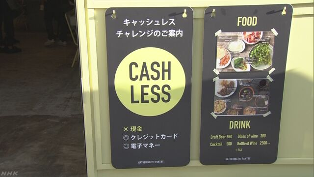
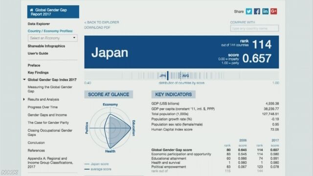
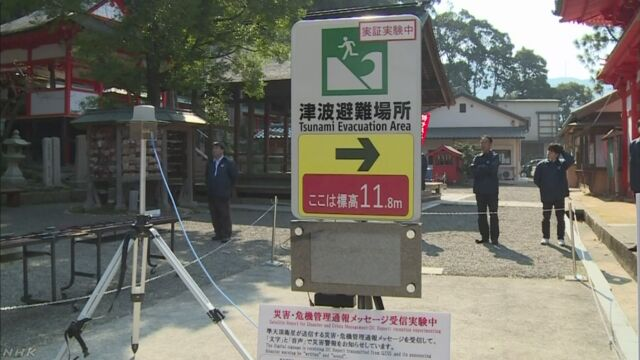

NEWS WEB EASY
振り仮名表示
-

現金で払うことができないレストランがオープン
レストランの会社のロイヤルホールディングスは、現金で払うことができない店を東京都中央区にオープンしました。 -
「パラダイスペーパー」タックスヘイブンを利用した人を発表
ＩＣＩＪという世界の記者の団体は、税金がないかとても安い「タックスヘイブン」と呼ばれる国を利用していた会社や人を調べました。 -
トランプ大統領が北朝鮮に拉致された人と家族に会う
アメリカのトランプ大統領と安倍総理大臣は６日、北朝鮮に拉致された人と家族１７人に東京で会いました。 -

男性と女性の差が小さい国のランキング 日本は１１４番
スイスにある「世界経済フォーラム」は、毎年世界の国で男性と女性の間にどのぐらい差があるか、政治、経済、教育、健康の４つについて調べています。 -
インドネシアで新しい種類のオランウータンが見つかる
イギリスなどの研究グループは、インドネシアのスマトラ島の森で、新しい種類のオランウータンが見つかったと発表しました。 -
岐阜県のイベントでドローンが落ちて６人がけがをする
岐阜県大垣市の公園で４日にイベントがあって、ドローンで空からお菓子を落として、集まった人に配っていました。 -

「世界津波の日」 津波から逃げる練習などを行った
１１月５日は、国連が決めた「世界津波の日」です。 -
トランプ大統領が日本に来て安倍総理大臣と会って話す
アメリカのトランプ大統領は今月アジアの国をまわります。 -
群馬県 緑色に光る「蛍光シルク」の繭を農家が育てる
シルクはカイコという虫が作る繭からできます。 -

オーストラリアが「エアーズロック」に登ることを禁止する
オーストラリアの真ん中に、「ウルル」という大きな岩があります。